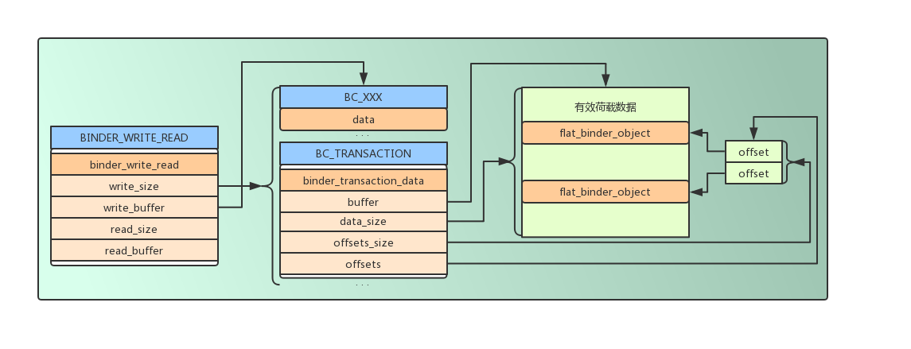

Android Binder 设计分析
前言
以下 Binder 设计部分整理至 universus 的博客 Android Bander设计与实现 - 设计篇。
Binder 的优势
简介
Binder 是 Android 系统中的进程间通信方式之一，它是基于 Client-Server 的通信方式。
相较于 Linux 系统中的其他进程间通信方式而言，它具有传输效率高、开销小的特点。
Linux IPC
Linux 的进程间通信方式包括管道、system V IPC、socket、消息队列等。
- Socket 是一个通用的进程间通信接口，传输效率低，开销大，主要用在跨网络的进程间通信和本机的进程间通信。
- 管道和消息队列采用存储-转发的方式，首先将数据从发送方复制到内核缓冲区，然后再复制到接收方。
- 共享内存无需拷贝数据，但是需要复制的控制，难以使用。
IPC 对比
各个 IPC 方式的拷贝次数：
| 通信方式 | 拷贝次数 |
|---|---|
| 共享内存 | 0 |
| Binder | 1 |
| Socker/管道/消息队列 | 2 |
Binder 特点
相较于以上 Linux 进程间通信方式，针对 Android 设计的 Binder 通信具有如下特点：
- Binder 采用共享内存的方式，将数据缓存同时映射到接收方和内核空间，发送方只需要拷贝一次数据即可完成通信。
- Binder 驱动在转发数据的过程中在通过内核向数据中写入进程的 UID 和 PID，使接收端可验证发送端身份，保证通信安全性，而传统的 Linux IPC 方式则无法通过这种方式鉴别发送方身份。
- Binder 使用了面向对象的思想来描述 Server 端的访问接入点和 Client 端的入口，Binder 是一个实体位于 Server 端的对象，它提供了一套访问 Server 端的方法，类似于类的成员方法，Client 端的入口则作为这个 Binder 对象的“句柄”，此时 Client 端访问 Server 端就像调用对象的方法一样容易，同时 Client 端的本地“句柄”对象也可以在进程间相互传递，使各处都可访问同一个 Server，Binder 弱化了进程间通信过程，使整个系统仿佛运行在面向对象的程序中。
总结
Binder 作为 Android 系统的主要的进程间通信方式，保证性能的同时，还兼顾了通信安全性和使用的便捷性。 基于 Client-Server 的方式，支持实名和匿名通信，是一种非常适合于便携式和嵌入式设备通信的 IPC 方式 。
Binder 通信模型
Binder 通信框架定义了 4 个组件角色，Server，Client，ServiceManager 和 Binder 驱动。 其中 Binder 驱动运行于内核层，它负责实现进程间通信的核心功能，管理每个 Server 端的 Binder 实体对象，以及 Client 中的 Binder 引用，Client 表示向 Server 端发起请求的客户端，Server 作为服务端负责处理 Client 端的请求，ServiceManager 负责管理 Server 的注册和申请，类似 DNS 服务器中注册服务器的域名，和浏览器向 DNS 服务器请求网站真实的 IP 地址的过程。
Binder 驱动
- Binder 驱动是一个运行在内核态的标准设备驱动，但是和硬件没有关系，它的实现遵循标准驱动的实现。
- Binder 驱动提供了 open()，mmap()，poll()，ioctl() 等标准文件操作，它以字符驱动设备中的 misc 设备注册在 /dev/ 下，用户通过/dev/binder 访问该它。
- Binder 驱动负责进程之间 Binder 通信的建立，Binder 在进程间的建立，Binder 在进程间的传递，Binder 引用技术管理，数据包在进程间的传递等底层支持。
- Binder 驱动使用 ioctl() 接口实现，它可实现一次调用，读写操作依次同时执行，相较于 read() 和 write() 更加灵活方便。
ServiceManager 和 Server
- ServiceManager 建立 Binder 名字和 Binder 实体的映射，Client 可通过字符形式的 Binder 名字请求 Binder 的引用。
- Server 创建 Binder 实体后，通过驱动将 Binder 名字及实体通过 Binder 驱动发至 ServiceManager 请求注册，驱动在内核中创建对应此 Server 进程中 Binder 实体的对应节点，以及 ServiceManager 中对此 Binder 的引用，然后将 Binder 名字和引用通过数据包传送给 ServiceManager，此时 ServiceManager 将名字和 Binder 引用存入查找表中。
- 当 Server 向 ServiceManager 请求注册时，这个过程本身就需要进程间通信，需要获取 ServiceManager 中 Binder 实体的引用，由于 ServiceManager 本身负责管理 Binder 的注册和引用的分配，所以在此之前，ServiceManager 通过向驱动发送 BINDER_SET_CONTEXT_MGR 命令请求注册自身为 ServiceManager，当 Server 需要请求 ServiceManager 的 Binder 引用时，只要向驱动请求 0 号引用即可获得，所有 Server 都可通过 0 号引用通过驱动向 ServiceManager 发送注册请求。
- 对于 ServiceManager 来说，所有的 Server 都是 Client，只不过任务很单一，知识为了注册 Server。
Client
Client 使用 0 号引用通过驱动向 ServiceManager 发送 Binder 名字请求获取 Server 端 Binder 的引用，ServiceManager 此时将会从表中查询 Binder 引用然后通过驱动回复给 Client。此时 Binder 引用在 Client 和 ServiceManager 各存在一个。
Binder
Binder 可分为实名 Binder 和匿名 Binder。
- 实名 Binder
所有将名字和引用注册到 ServiceManager 的 Binder 实体都是实名 Binder。
- 匿名 Binder
匿名 Binder 指没有在 ServiceManager 中注册名字的 Binder，当 Client 与 Server 建立连接时可将新创建的 Binder 传递给 Client，此时 Client 将和匿名 Binder 实现私密通道，第三方进程无法通过穷举获取匿名 Binder 的引用。
Binder 协议
ioctl
Binder 协议使用 ioctl(fd, cmd, arg) 函数实现，fd 为驱动的文件描述符，cmd 参数为命令，arg 为参数，每种 cmd 对应的 arg 结构也不同。当通过驱动进行通信时，首先使用 open 打开驱动文件，然后使用返回的文件描述符调用 ioctl 进行通信。
| cmd | 解释 | 参数 |
|---|---|---|
| BINDER_WRITE_READ | 向 Binder 发送读写命令，参数分为写和读两部分，如果 write_size 不为 0 则首先将 write_buffer 里的数据写入 Binder，其次 read_size 不为 0 再从 Binder 中读取数据存入 read_buffer 中，write_consumed 和 read_consumed 表示操作完成时 Binder 驱动实际发送的 |
struct binder_write_read { signed long write_size; signed long write_consumed; unsigned long write_buffer; signed long read_size; signed long read_consumed; unsigned long read_buffer; }; |
| BINDER_SET_MAX_THREADS | 告知 Binder 驱动接收方（Server 端）线程池的最大线程数，Client 告知 Server 端需要开辟多大的线程池为并发请求提供服务，为了让驱动发现线程数达到该值时不要再命令接收端启动新的线程。 | int max_threads; |
| BINDER_SET_CONTEXT_MGR | 注册当前进程为 ServiceManager，直到当前 ServiceManager 调用 close()，系统中只能存在一个 ServiceManager。 | - |
| BINDER_THREAD_EXIT | 通知 Binder 驱动当前线程退出，驱动会释放为参与 Binder 通信的相应线程建立的结构。 | - |
| BINDER_VERSION | 获取 Binder 驱动的版本号。 | - |
BINDER_WRITE_READ 写入
BINDER_WRITE_READ 命令的数据写入格式为命令+数据，多条命令可连续存放，对应的命令后面写入对应的数据结构，最后将这段内存的指针赋给 binder_write_read 结构体的 write_buffer。
| 命令 | 解释 | 数据 |
|---|---|---|
| BC_TRANSACTION BC_REPLY |
1. BC_TRANSACTION 用于 Client 端向 Server 端发送请求。2. BC_REPLY 用于 Server 端向 Client 回复数据。3. 命令后面接 binder_transaction_data 用于存放数据。 |
struct binder transaction _data |
| BC_ACQUIRE_RESULT BC_ATTEMPT_ACQUIRE |
暂未实现 | - |
| BC_FREE_BUFFER | 释放映射的内存空间，Binder 接收方通过 mmap 方法映射了一块内存，Binder 驱动使用这块内存，采用佳匹配算法实现接收数据缓存的动态分配和释放，满足并发请求对接收缓存区的需求。应用程序处理完这片数据后需要使用该命令释放缓存区，避免因为缓存区耗尽而无法接收新数据。 | 指向需要释放的缓存区的指针；指针位于收到的 Binder数据包中。 |
| BC_INCREFS BC_ACQUIRE BC_RELEASE BC_DECREFS |
这组命令增加或减少 Binder 的引用计数，用以实现强指针或弱指针的功能。 | 32 位 Binder引用号。 |
| BC_INCREFS_DONE BC_ACQUIRE_DONE |
1. 第一次增加 Binder 实体引用计数时，驱动向 Binder 实体所在的进程发送 BR_INCREFS, BR_ACQUIRE 消息。2. Binder 实体所在的进程处理完毕回复 BC_INCREFS_DONE，BC_ACQUIRE_DONE。 |
1. void *ptr：Binder实体在用户空间中的指针。2. void *cookie：与该实体相关的附加数据。 |
| BC_REGISTER_LOOPER BC_ENTER_LOOPER BC_EXIT_LOOPER |
1. 与 BINDER_SET_MAX_THREADS 共同实现 Binder 驱动对接收方线程池管理。2. BC_REGISTER_LOOPER 通知驱动线程池中的一个线程已经创建了。3. BC_ENTER_LOOPER 通知驱动该线程已经进入主循环，可以接受数据。4. BC_EXIT_LOOPER 通知驱动该线程退出主循环，不再接受数据。 |
- |
| BC_REQUEST_DEATH_NOTIFICATION | 已经获得 Binder 引用的进程通过此命令请求驱动在 Binder 实体销毁时得到通知。虽然强指针可以确保引用存在时实体不会被销毁，但没人能保证是否由于实体所在的 Server 关闭 Binder 驱动或者异常退出而消失，引用者能做的就是要求 Server 在此时给出通知。 | 1. uint32 *ptr 需要得到死亡通知的 Binder 引用。2. void **cookie 与死亡通知相关的信息，驱动会在发出死亡通知时返回给发出请求的进程。 |
| BC_DEAD_BINDER_DONE | 收到 Binder 实体通知的进程在删除 Binder 引用后使用本命令告知驱动。 | void **cookie |
BINDER_WRITE_READ 读取
从 Binder 读取的格式与写入数据格式一致，使用（消息 ID+数据）的形式，多条可连续存放。
| 命令 | 解释 | 参数 |
|---|---|---|
| BR_ERROR | 发生内部错误（如内存分配失败） | - |
| BR_OK BR_NOOP |
操作完成 | - |
| BR_SPAWN_LOOPER | 用于接收方线程管理，当驱动发现接收方所有线程都处于忙碌状态且线程池里的线程总数没有 BINDER_SET_MAX_THREADS 设置的最大线程数时，向接收方发送该命令要求创建更多线程以备接受数据。 |
- |
| BR_TRANSACTION BR_REPLY |
对应发送方的 BC_TRANSCATION 和 BC_REPLY |
binder_transcation_data |
| BR_ACQUIRE_RESULT BR_ATTEMPT_ACQUIRE BR_FINISHED |
尚未实现 | - |
| BR_DEAD_REPLY | 交互过程中如果发现对方进程或线程已经死亡则返回该消息。 | - |
| BR_TRANSACTION_COMPLETE | 发送方通过 BC_TRANSACTION 或 BC_REPLY 发送完一个数据包后，都能收到该消息作为成功的反馈。无论异步或同步。 |
- |
| BR_INCREFS BR_ACQUIRE BR_RELEASE BR_DECREFS |
用于管理强/弱指针的引用计数，只有提供 Binder 实体的进程才能收到该组消息。 | 1. void *ptr Binder 实体在用户空间的指针。2. void *cookie 与该实体相关的附加数据。 |
| BR_DEAD_BINDER BR_CLEAR_DEATH_NOTIFICATION_DONE |
1. 向获得 Binder 引用的进程发送Binder 实体死亡通知书。 2. 收到死亡通知书的进程接下来会返回 BC_DEAD_BINDER_DONE 做确认。 |
void **cookie 在使用BC_REQUEST_DEATH_NOTIFICATION 注册死亡通知时的附加参数。 |
| BR_FAILED_REPLY | 如果发送非法引用号则返回该消息。 | - |
binder_transaction_data 结构
binder_transaction_data 表示收发数据包结构，使用时将它接在 TRANSACTION 和 RELPY 命令后面。
| 成员 | 解释 |
|---|---|
| union { size_t handle; void *ptr; } target; |
1. 对于发送数据包的一方，该成员指定发送目的地。由于目的地在远端，所以这里填入的是对 Binder 实体的引用，存放在 target.handle 中。2. 当数据包到达接收方时，驱动将该成员转换成 Binder 实体，即指向 Binder 对象内存的指针，使用 target.ptr 来保存。3. target.ptr 指针是接收方在将 Binder 实体传输给其他进程时提交给驱动的，驱动能够自动将发送方填入的引用转换成接收方 Binder 对象的指针，接收方可直接作为对象指针使用。（通常使用 reinterpret_cast 转换）。 |
| void *cookie | 1. 发送方忽略该成员。 2. 接收方收到数据包时，该成员存放的是创建 Binder 实体时由该接收方自定义的任意数值，作为与 Binder 指针相关的额外信息存放在驱动中，驱动基本不关心该数据。 |
| unsigned int code; | 该成员存放收发双方约定的命令码，驱动完全不关心该成员的内容。一般为 Server 端定义的公共接口函数的编号。 |
| unsigned int flags; | 1. 交互相关的标志位 2. 当为 TF_ONE_WAY 表示这次交互为异步的，Server 端不会返回数据。驱动利用该位来决定是否建立与返回有关的数据结构。3. 当为 TF_ACCEPT_FDS 是处于安全考虑，如果发起请求的一方不希望再收到回复中接受文件形式的 Binder，当收到一个文件形式的 Binder 会自动为数据接收方打开一个文件，这时可以使用该位避免打开文件过多。 |
| pid_t sender_pid; uid_t sender_euid; |
1. 该成员存放发送方的进程 ID 和用户 ID，由驱动负责填入。 2. 接收方可以读取该成员获知发送方的身份。 |
| size_t data_size; | 1. 该成员表示 data.buffer 指向的缓冲区存放的数据长度。发送数据时由发送方填入，表示即将发送的数据长度。2. 在接收方用来告知接收到数据的长度。 |
| size_t offsets_size; | Binder 驱动通常不关心 data.buffer 里存放的数据，但如果有 Binder 在其中传输则需要将其相对 data.buffer 的偏移位置指出来让驱动知道。可能存在多个 Binder 同时在数据中传递，所以须用数组表示所有偏移位置。本成员表示该数组的大小。 |
| union { struct { const void *buffer; const void *offsets; } ptr; uint8_t buf[8]; } data; |
1. data.buffer 存放要发送或接收到的数据。2. data.offsets 指向 Binder 偏移位置数组，该数组可以位于 data.buffer 中，也可以在另外的内存空间中，并无限制。buf[8] 是为了无论保证 32 位还是 64 位平台，成员 data 的大小都是 8 个字节。 |
下图说明了 BINDER_WRITE_READ 通信的数据包示例：

Binder 层次概述
Binder 位于系统以下几个部分：
- 应用层：位于 Server 进程和 Client 进程中。
- Binder 驱动层：分别管理 Server 端的 Binder 实体和 Client 端的引用。
- Binder 传输结构：跨进程传递 Binder，使用数据结构描述。
Binder 应用层
Binder 使用面向对象的思想设计，但不限于必须使用面向对象的语言实现通信，Native 层的 ServiceManager 就是使用 C 语言实现的。
存在于 Android 应用层的 Server 端通常使用面向对象实现，首先 Server 端为了给 Client 端提供服务，需要实现一套提供服务的接口函数，这时通常采用 Proxy 设计模式，将功能函数抽象成一个接口，Server 和 Client 端同时实现这个接口，Server 实现对应函数的功能，而 Client 则实现对 Server 端对应功能的请求，及代理，此时 Client 端使用 Server 端服务就像直接使用本地方法一样简单。
如何将 Binder 通信和 Proxy 设计模式结合起来是应用程序实现面向对象Binder通信的根本问题。
Binder Server 端
- Binder 实体是 Binder 在 Server 端的表述
使用 Binder 通信首先定义包含功能函数的接口，然后 Server 端和 Client 端的 Proxy 类各自实现该接口，由于功能函数需要跨进程调用，所以需要使用数字一一编号，Server 端接收到编号即可决定调用哪个功能函数。此时需要引入 Binder，Server 端定义另一个 Binder 抽象类处理来自 Client 端的 Binder 请求数据包，其中核心成员为 onTransact() 方法，该方法负责接收数据包，然后根据分析数据包处理不同请求。
- Binder 数据包的接收
使用继承方式构建一个同时实现功能函数接口和 Binder 抽象类的 Server 端 Binder 实体，并实现所有函数，包括数据包处理函数 onTransact()，它的输入来自 Client 端发出的 binder_transaction_data 结构的数据包。其中有一个 code 成员即为约定的函数调用编号，onTransact() 方法将 case-by-case 解析 code 值，并从数据包中提取函数参数，请求调用相应的功能函数，并将函数执行完毕的数据写回一个新构建的 binder_transaction_data 数据包中返回。
- Binder 数据包的分发
Binder 实体必须以 Binder 传输结构 flat_binder_object 的形式发送给其他进程才能建立进程间通信，其中 Binder 实体的引用号存在于其 handle 成员中，Binder 驱动根据 Binder 实体的位置从传输数据结构中获取该 Binder 的传输结构，并创建对应的 Binder 在内核中的节点，当有其他进程向该 Binder 发送数据时，驱动会根据内核节点中记录的信息将 Binder 实体指针填入 binder_transaction_data 中的 target.ptr 成员中返回给接收线程。接收线程中数据包中解析出该指针，使用 reinterpret_cast 将 Binder 转换成 Binder 抽象类，并调用其 onTransact() 函数，即可调用到不同的 Binder 实体的对应的 onTransact() 函数的实现。
Binder Client 端
- Binder 引用是 Binder 在 Client 端的表述
Client 端的 Binder 也需要实现和服务的相同的功能函数的接口，但并不是实现功能，而是作为代理实现对远程功能函数的包装，将函数的参数通过 Binder 打包发送至 Server 端，此时 Client 还需要知道 Binder 实体相关的信息，即对实体 Binder 的引用，该引用由 ServiceManager 返回，或者是另一种由另一个进程直接发送过来的对匿名 Binder 的引用。
- 发送 Binder 请求
由于 Client 端 Binder 实现了和 Server 端相同的功能函数接口，所以 Client 端使用起来就像使用本地的功能函数一样，对用户无感知。对远端功能函数的包装方法为：创建一个 binder_transaction_data 数据包，将对应的功能函数编码填入 code 成员中，将函数参数填入 data.buffer 成员中，并将目标 Binder 的引用填入数据包的 target.handle 成员中，target 本身是一个联合体，有 ptr 和 handle 两个成员，前者用于 Server 端，其中存放了指向 Binder 实体对应的内存空间的指针，后者用于 Client 端，存放 Binder 实体的引用号，告知驱动需要发送的目标 Binder 实体，数据包打包完成后，通过 Binder 驱动的方法通过 BC_TRANSACTION/BC_REPLY 指令完成和远程功能函数的调用交互。
Binder 传输结构
- Binder 通过
flat_binder_object结构在数据包中进行跨进程传输
| 成员 | 解释 |
|---|---|
| unsigned long type | 表明 Binder 的类型，有如下几种：BINDER_TYPE_BINDER：表示传递的是 Binder 实体，并且指向该实体的引用都是强类型。BINDER_TYPE_WEAK_BINDER：表示传递的是 Binder 实体，并且指向该实体的引用都是弱引用。BINDER_TYPE_HANDLE：表示传递的是 Binder 强引用类型。BINDER_TYPE_WEAK_HANDLE，表示传递的是 Binder 弱引用类型。BINDER_TYPE_FD 表示传递的是文件形式的 Binder。 |
| unsigned long flags | 此成员只对首次传递 Binder 有效，因为首次传递，Binder 驱动将在内核中创建 Binder 对应的实体节点，需要从此成员获取值。 0-7 位，使用 FLAT_BINDER_FLAG_PRIORITY_MASK 取出值，表示处理本实体请求数据包的线程的最低优先级。当一个应用程序提供多个实体时，可以通过该参数调整分配给各个实体的处理能力。第 8 位：代码中用 FLAT_BINDER_FLAG_ACCEPTS_FDS 取出值，值为 1 表示该实体可以接收其它进程发过来的文件形式的 Binder，由于接收文件形式的Binder会在本进程中自动打开文件，有些Server可以用该标志禁止该功能，以防打开过多文件。 |
| union { void *binder; signed long handle; } |
当传递的是 Binder 实体时使用 binder 域，指向 Binder 实体在应用程序中的地址。 当传递的是 Binder 引用时使用 handle 域，存放 Binder 在进程中的引用号。 |
| void *cookie | 该域只对 Binder 实体有效，存放与该 Binder 有关的附加信息。 |
- Binder 传输结构的传输
不管是 Binder 实体还是其引用，都可能属于任意一个进程，所以 Binder 传输结构不能透明的在进程间传递，其中的信息必须经过驱动的翻译转换，才能让每个进程正确的使用 Binder 进程通信，例如在 Server 端将 Binder 实体传递给 Client 时，通过 flat_binder_object 结构进程传递，此时其中的 type 成员是 BINDER_TYPE_BINDER 类型，Binder 指向的是 Server 端的用户空间的内存地址，对 Client 端无用，驱动此时必须对 Binder 进行转换，将 type 改成 BINDER_TYPE_HANDLE ，为这个 Binder 在接收进程中创建位于内核中的引用，并将 Binder 实体的引用号填入 handle 中，对于 Binder 传输结构中发送的 Binder 引用类型也要做相同的转换，经过驱动翻译处理后的 Binder 引用才是可用的，此时才能填入 flat_binder_object 中的 handle 成员，向 Binder 实体发送请求。
- Binder 验证
由于 Binder 在进程间的传输需要驱动的翻译，所以进程不能随意猜测一个 Binder 引用号就能向 Server 端请求服务，必须是由驱动在内核中创建对应的合法引用才行，需要使用由驱动注册相应的 Binder 节点亲自授予的引用号,必须经过驱动进行合法的验证，通过后才能进行通信，否则将被拒绝。
- 驱动对
flat_binder_object结构的转换
| Binder 类型（type 成员） | 发送方的操作 | 接收方的操作 |
|---|---|---|
| BINDER_TYPE_BINDER BINDER_TYPE_WEAK_BINDER |
1. 只有实体所在的进程能发送该类型的Binder。 2. 如果是第一次发送驱动将创建实体在内核中的节点，并保存 binder，cookie 和 flag 成员。 |
1. 如果是第一次接收该 Binder 则创建实体在内核中的引用；将 handle 成员替换为新建的引用号；将 type 成员替换为 BINDER_TYPE_HANDLE 或 BINDER_TYPE_WEAK_HANDLE。 |
| BINDER_TYPE_HANDLE BINDER_TYPE_WEAK_HANDLE |
1. 获得 Binder 引用的进程都能发送该类型 Binder。 2. 驱动根据 handle 域提供的引用号查找建立在内核的引用，如果找到说明引用号合法，否则拒绝该发送请求。 |
1. 如果收到的 Binder 实体位于接收进程中：将 ptr 成员替换为保存在节点中的 binder 值；cookie 替换为保存在节点中的 cookie 值；type 替换为 BINDER_TYPE_BINDER 或 BINDER_TYPE_WEAK_BINDER。2. 如果收到的 Binder 实体不在接收进程中：如果是第一次接收则创建实体在内核中的引用；将 handle 域替换为新建的引用号。 |
| BINDER_TYPE_FD | 验证 handle 成员中提供的打开文件号是否有效，无效则拒绝该发送请求。 |
在接收方创建新的打开文件号并将其与提供的打开文件描述结构绑定。 |
- 文件形式的 Binder
文件形式的 Binder 是一种特殊的 Binder，将文件看作一个 Binder 实体，进程打开的文件号看作 Binder 的引用，一个进程可将打开文件的文件号传递给另一个进程，从而另一个进程也打开了同一个文件。
一个进程打开一个文件，获得与之对应的文件号，从 Binder 角度，Linux 在内核创建的对应的文件描述结构 struct file 做为 Binder 实体，这时可通过 flat_binder_object 结构在进程间进行传递，type 成员此时为 BINDER_TYPE_FD，表示此 Binder 为文件 Binder，驱动将会对发送者的文件号做转换，在接收进程创建一个新的文件号与内核中的文件描述结构对应，然后替换 flat_binder_object 结构中的文件号传递给接收进程。
通过 Binder 发送的文件与多个进程打开同一个文件的意义不同，通过 Binder 打开的文件共享 Linux 虚拟文件系统中的 struct file，struct dentry，struct inode 结构，当一个进程使用 read()/write()/seek() 改变文件指针，另一个进程的文件指针也会同时改变。
Binder 驱动层
Binder 驱动式实现 Binder 进程间通信的核心，它记录了所有 Binder 实体以及每个实体在各个进程中的引用；它能够通过 Binder 引用查询对应的 Binder 实体；它为 Binder 实体创建以及查找对应引用，它记录 Binder 实体所在进程；管理 Binder 强/弱引用，创建/销毁 Binder 实体等。
驱动中的第一个 Binder 是 ServiceManager，它用于管理实名 Binder 的 Binder 实体的注册，负责实名 Binder 注册过程中的进程间通信。驱动将所有进程中的 0 号 Binder 引用都指向 ServiceManager，那么索引进程将很方便的统一使用 0 号引用访问 ServiceManager，各个进程通过 flat_binder_object 结构穿过驱动进程进程间通信，Binder 驱动将会监听 binder_transaction_data 中的 data.offset 数组，所有 Binder 都在驱动的检查下传递，驱动通过 type 成员检查，如果为 BINDER_TYPE_BINDER 或 BINDER_TYPE_WEAK_BINDRE 则创建对应的 Binder 实体，如果为 BINDER_TYPE_HANDLE或 BINDER_TYPE_WEAK_HANDLE 则创建 Binder 引用，内核中的 Binder 实体和 Binder 引用将随着 Binder 通信过程逐渐增加，整个过程对用户透明。
- Binder 实体在驱动中的表述
Binder 实体在驱动中以树的节点的形式存在，使用 struct binder_node 结构表示。
| 成员 | 解释 |
|---|---|
| int debug_id; | 用于调试 |
| struct binder_work work; | 当本节点的引用计数发生改变时，需要通知所属进程，通过该成员挂入所属进程的 to-do 队列里，唤醒所属进程执行 Binder 实体引用计数的修改。 |
| union { struct rb_node rb_node; struct hlist_node_dead_node; } |
每个进程都维护一棵红黑树，以 ptr 成员为索引存放该进程所有的 Binder 实体，它是 Binder 实体在用户空间的指针，这样 Binder 驱动就可以根据 ptr 指针找到位于内核的 Binder 节点。rb_node 用于将该节点链接到红黑树中，节点被销毁时需要将 rb_node 从树中移除，如果本节点引用还没有断开，就将节点使用 dead_node 记录到独立的链表中，直到通知所有进程切断与该节点的引用后，该节点才能被销毁。 |
| struct binder_proc *proc; | 本成员指向节点所属的进程，即提供该节点的进程。 |
| struct hlist_strong_refs; | 本成员是队列头，所有指向本节点的引用都链接在该队列里。这些引用可能隶属于不同的进程。通过该队列可以遍历指向该节点的所有引用。 |
| int internal_strong_refs; | 用以实现强指针的计数器：产生一个指向本节点的强引用该计数就会加 1。 |
| int local_weak_refs; | 驱动为传输中的 Binder 设置的弱引用计数。如果一个 Binder 通过数据包从一个进程发送到另一个进程，驱动会为该 Binder 增加引用计数，直到接收进程通过 BC_FREE_BUFFER 通知驱动释放该数据包的数据区为止。 |
| int local_strong_refs; | 驱动为传输中的 Binder 设置的强引用计数，同上。 |
| void __user *ptr; | 指向用户空间 Binder 实体的指针，来自于 flat_binder_object 的 Binder 成员。 |
| void __user *cookie; | 向用户空间的附加指针，来自于 flat_binder_object 的 cookie 成员。 |
| unsigned has_strong_ref; unsigned pedning_strong_ref; unsigned has_weak_ref; unsigned pending_weak_ref; |
用于控制驱动与 Binder 实体所在进程交互式修改引用计数 |
| unsigned has_async_transaction; | 该成员表明该节点在 to-do 队列中有异步交互尚未完成。驱动将所有发送往接收端的数据包暂存在接收进程或线程开辟的 to-do 队列里。对于异步交互，驱动做了适当流控：如果 to-do 队列里有异步交互尚待处理则该成员置 1，这将导致新到的异步交互存放在本结构成员 – asynch_todo 队列中，而不直接送到 to-do 队列里。目的是为同步交互让路，避免长时间阻塞发送端。 |
| unsigned accept_fds; | 表明节点是否同意接受文件方式的 Binder，来自 flat_binder_object 中 flags 成员的 FLAT_BINDER_FLAG_ACCEPTS_FDS 位。由于接收文件 Binder 会为进程自动打开一个文件，占用有限的文件描述符，节点可以设置该位拒绝这种行为。 |
| int min_priority; | 设置处理 Binder 请求的线程的最低优先级。发送线程将数据提交给接收线程处理时，驱动会将发送线程的优先级也赋予接收线程，使得数据即使跨了进程也能以同样优先级得到处理。不过如果发送线程优先级过低，接收线程将以预设的最小值运行。 |
| struct list_head_async_todo; | 该域的值来自于 flat_binder_object 中 flags 成员。异步交互等待队列；用于分流发往本节点的异步交互包。 |
- Binder 引用在驱动中的表述
Binder 引用使用 binder_ref 结构表示。
| 成员 | 含义 |
|---|---|
| int debug_id | 用于调试 |
| struct rb_node rb_node_desc; | 每个进程有一棵红黑树，进程所有引用以引用号（即本结构的 desc 成员）为索引添入该树中。本成员用做链接到该树的一个节点。 |
| struct rb_node rb_node_node; | 每个进程又有一棵红黑树，进程所有引用以节点实体在驱动中的内存地址（即本结构的 node 成员）为所引添入该树中。本成员用做链接到该树的一个节点。 |
| struct hlist_node node_entry; | 将本引用做为节点链入所指向的 Binder 实体结构 binder_node 中的 refs 队列。 |
| struct binder_proc *proc; | 本引用所属的进程。 |
| struct binder_node *node; | 本引用所指向的 Binder 实体节点。 |
| uint32_t desc; | 本结构的引用号 |
| int strong; | 强引用计数 |
| int weak; | 弱引用计数 |
| struct binder_ref_death *death; | 应用程序向驱动发送 BC_REQUEST_DEATH_NOTIFICATION 或 BC_CLEAR_DEATH_NOTIFICATION 命令从而当 Binder 实体销毁时能够收到来自驱动的提醒。该成员不为空表明用户订阅了对应实体销毁的“讣告”。 |
同一个 Binder 实体可能存在多个 Binder 引用，而这些引用分布在不同的进程中，和实体一样，每个进程维护一颗红黑树存放 Binder 引用，Binder 引用可通过两个键索引：
- 对应 Binder 实体在内核中的地址。它是内核中
binder_node结构的地址，它的地址在内核中具有唯一性，Binder 实体在不同用户进程地址可能重合，所以不能用来做索引，Binder 驱动利用红黑树在进程中快速查找 Binder 实体对应的引用（一个实体在进程中之间里一个引用）。 - 引用号。它是驱动为 Binder 引用分配的一个 32 位标识，在一个进程中具有唯一性，多个进程中引用号可能相同，引用号可做为 Binder 引用在用户进程的句柄，由驱动动态分配，0 号为特殊引用号，固定指向 ServiceManager。当向 Binder 发送数据包时，应用程序将 Binder 引用号填入
binder_transaction_data结构中的target.handle成员中，表明该数据包的目的 Binder，驱动根据引用号在红黑树中找到对应的binder_ref结构，然后可通过其node成员获取对应的 Binder 实体所在的进程及相关信息，实现数据包的发送。
Binder 驱动实现
Binder 内存映射和接收缓存区实现
- 传统的 IPC 通信方式
在传统的 IPC 通信中，通常发送方发送数据时，首先将数据放入缓存区，然后通过 system call 陷入内核，内核服务在内核分配内存，将发送方数据拷贝到内核缓冲区，同时接收方需要分配同样的缓存区，然后内核将数据从内核缓存区拷贝到接收方并唤醒接收线程，完成数据的发送，这种方式具有两个缺陷：
- 效率低下，需要两次数据复制过程，Linux 通过
copy_from_user()/copy_to_user()实现跨内核复制数据，如果此过程中使用了高端内存，需要临时建立和取消页映射，会造成性能损失。 - 接收方需要提供数据缓存，而缓存大小未知，只能尽量开辟足够的空间，或者提前调用 API 获取大小，两种方式都会造成时间或空间的浪费。
- Binder IPC 实现
Binder 采用与通常 IPC 方式不同的内存管理策略，Binder 驱动负责数据接收缓存的管理，它实现了 mmap() 系统调用，mmap() 通常用于具有物理介质的文件系统上，而 Binder 驱动做为字符设备支持 mmap() 并不是为了在物理介质和用户空间做映射，而是用来创建用于接收数据的缓存空间。
创建接收缓存区的方法如下：
1 | fd = open("/dev/binder", O_RDWR); // 打开 Binder 驱动。 |
以上操作为接受方创建了一片大小为 MAP_SIZE 的接收缓存区，mmap() 返回内存映射在用户空间的地址，这段空间由驱动管理，用户不能直接访问（类型为 PROT_READ 只读映射）。
Binder 接收线程实现
Binder 通信的最终形态其实是不同进程中的线程之间的通信，Client 端中的线程 1 通过 Binder 引用向 Server 端发送请求，Server 将启动线程 2 来处理 Client 端的请求，此时 Client 端中的线程 1 将等待回应，Server 端的线程 2 处理完毕返回结果，然后 Client 端中的线程 1 被唤醒并接收数据，在此过程中，Server 端中的线程 2 仿佛 Client 端线程 1 的影子，这个影子穿越进程执行任务后再回到线程 1 中，就像同一个线程执行一个任务一样，驱动会帮助此行为，为线程 2 设置与线程 1 相同的线程优先级，为了使 Server 端线程 2 的执行时间接近 Client 端线程 1 的执行时间，减小环境之间的差异。不过除了线程优先级类似，两个线程从的身份，打开的文件，栈大小，私有数据等并无相同之处。
- Binder 线程池管理
考虑多个 Client 端同时向一个 Server 端发起请求的情况，对于 Socket 处理方式而言，每当它监听到 Client 端的请求后，它就会对每一个 Client 启动一个线程来单独处理 Client 端发出的请求。对于 Binder 来说则不是这样。
Binder 会提前创建好若干线程，同时每个线程使用 BINDER_WRITE_READ 命令读取 Binder 请求，此时这些线程将处于阻塞状态，并存放于队列中，当有 Client 端请求时，Binder 驱动将从队列中唤醒一个线程用于处理 Client 请求，由于需要提前创建一定数量的线程，为避免浪费资源，Binder 协议提供了如下命令控制线程池：
1 | BINDER_SET_MAX_THREADS |
应用程序 Client 端通过 BINDER_SET_MAX_THREADS 通知 Binder 驱动最多可以创建线程的数量，在每个线程创建，进入循环，退出循环时会调用 BC_REGISTER_LOOP BC_ENTER_LOOP BC_EXIT_LOOP 通知 Binder 驱动，驱动会收集线程相关信息，在每次驱动接收到 Client 端数据包并后返回给线程时，都会检查十是否还有闲置线程，如果没有了，则 Binder 驱动会在数据包中附加 BC_SPAWN_LOOPER 命令通知 Client 端，线程将不足以响应请求，希望能够再创建若干线程。这样就构成一个持续的处理和响应的过程。
- 线程启动优化
当 Client 端进程中的线程 1 向 Server 端进程发送请求时，Binder 驱动会首先查看线程 1 是否也在等待处理 Server 端进程的某个线程的响应（两个进程间互相发送消息时），如果 Server 端存在一个这样个线程 2，那么驱动将要求线程 2 来处理这个请求，因为可以确定的是线程 1 在等待线程 2 的响应，线程 2 也阻塞在读取返回包的过程，这样可以有效利用线程资源，避免线程 2 的空闲，同时避免了创建额外的线程。
数据包接收队列与（线程）等待队列实现
数据接收端通常存在两个队列，数据包接收队列和线程等待队列，数据包接收队列负责接收数据包并缓存，之后会分发给线程处理，而线程等待队列则为等待处理请求的线程，在 Binder 驱动中，每个进程都具有一个全局接收队列，称为 to-do 队列，负责存放不是发往特定线程的数据包，相应的有一个全局等待队列，等待处理全局接受队列中的数据包，同时每个线程有自己私有的 to-do 队列，存放发送给自己的数据包，对应的私有等待队列用于接收私有 to-do 队列中的数据包，其中只有一个线程，就是这个线程自身。
- 数据包接收规则
Binder 驱动将根据以下规则确定数据包存放在全局或私有队列中：
- Client 端发送至 Server 端的数据包全部提交到进程全局的 to-do 队列，除了前面线程启动优化中的情况，Client 端的线程 1 发送的数据包将存放在满足条件的 Server 端的线程 2 的私有 to-do 队列中。
- 对于同步请求的返回数据包，都放入发起请求的线程的私有 to-do 队列中。
根据以上规则得到了线程进入全局等待队列的规则，即如果一个线程不接收返回数据包则应该在等待队列中等待接收新任务，否则就应该在其私有的队列中等待 Server 端的返回数据包。
驱动为 Binder 通信所加的这些规则，在应用程序的同步交互中体现出了线程一致性原则：
- Client 端发送数据包的线程必须和等待返回包的线程是同一个，否则将无法接收到返回包。
- Server 端发送返回包的线程必须和接收到请求的线程是同一个，否则将数据包返回至请求的线程。（返回数据包的 Binder 由驱动记录在接收请求数据包的线程中，所以发送数据包的线程也需要是它）
- 同步异步交互
在 Binder 通信中，同步交互和异步交互的区别在于，同步交互时 Client 端需要等待 Server 端的响应数据包，而异步交互则由于没有返回数据需要接收，所以 Client 端发出请求后可立即结束。Binder 驱动对于两种交互的处理并不是把它们直接加入对应的 to-do 队列中，而是定义了异步为同步请求让步的策略：
对于 Binder 实体，如果存在一个异步交互未被线程处理完时，那么后来的发送给该 Binder 实体的异步请求将不再加入 to-do 队列中，而是阻塞在 Binder 驱动为该 Binder 实体开辟的异步交互队列中（Binder 节点的 async_node 成员中），在此期间同步交互依旧不受限制直接进入 to-do 队列接受处理，直到该异步交互处理完毕，下一个异步交互方可以脱离异步交互队列进入 to-do 队列中。这样做是因为同步交互的请求端需要等待返回包，必须迅速处理完毕以免影响请求端的响应速度，而异步交互属于‘发射后不管“，即使延时一些不会阻塞其它线程，所以使用专用队列将过多的异步交互暂存起来，避免突发大量异步交互挤占 Server 端的处理能力或耗尽线程池里的线程，进而阻塞同步交互。
结语
以上”Binder 设计“部分是阅读博客所做的记录，由于可能出现理解偏差，所以里面可能会存在错误的论述，需要我在后期学习过程中去确认修正。
Android Binder 设计分析